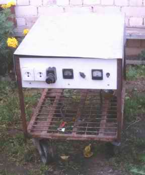
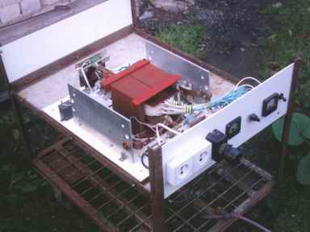
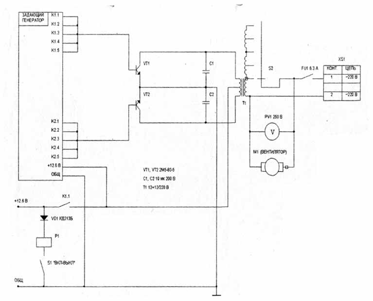
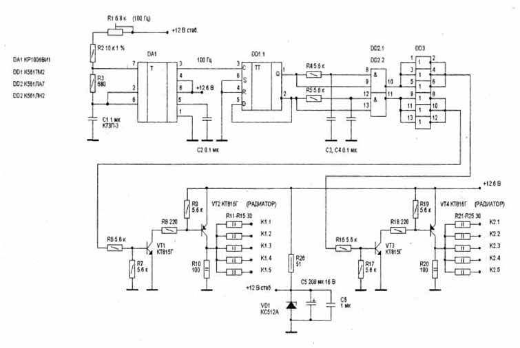

Преобразователь напряжения =12/~220 В 50 Гц 600 Вт


Преобразователь напряжения предназначен для питания с использованием аккумуляторной батареи или бортовой сети автомобиля электрических устройств, подключаемых к сети переменного тока 220 В 50 Гц, при отсутствии такой сети (в полевых условиях, во время движения), а также при перебоях подачи электроэнергии. Преобразователь смонтирован на тележке. На нижнем уровне устанавливается аккумуляторная батарея 6СТ-190 или аналогичная, на верхнем смонтирована электронная схема с органами управления и подключения.
Технические данные:

Рис. 1. Схема электрическая принципиальная преобразователя напряжения.

Рис. 2. Схема электрическая принципиальная задающего генератора преобразователя.
Описание:
Схема преобразователя приведена на рис. 1. На транзисторах VT1 - VT2 (2 шт. 2М5-80-5) собран двухполупериодный инвертор, подключенный к секциям низковольтной обмотки повышающего трансформатора Т1. Ключи инвертора включаются поочередно: в первом такте (10 мс) - VT1, во втором такте (10 мс) - VT2. Конденсаторы C1, C2 улучшают форму выходного напряжения. Для включения преобразователя предназначена цепь выключатель S1 - реле P1, которое срабатывает только при правильной полярности входного напряжения. Регулировка выходного напряжения осуществляется переключателем S2. Для контроля выходного напряжения используется вольтметр PV1. Вентилятор M1 предназначен для охлаждения ключей VT1, VT2 и служит нагрузкой преобразователя при холостом ходе. Все необходимые сигналы для управления ключами инвертора вырабатываются задающим генератором, схема которого приведена на рис. 2. На микросхеме DA1 (КР1006ВИ1) собран генератор импульсов частотой 100 Гц, которые подаются на вход триггера DD1 (К561ТМ2). Частота следования импульсов подстраивается резистором R1. На выходах триггера вырабатываются противофазные импульсы частотой 50 Гц скважностью 0.5, которые через буферы DD3 (К561ЛН2) управляют усилителями мощности VT1, VT2 и VT3, VT4. Узел на микросхеме DD2 (К561ЛА7) служит для формирования паузы между управляющими импульсами.
Состояние разработки:
Изготовлен опытный экземпляр, проведены успешные испытания в различных, в том числе и полевых, условиях. К преобразователю подключались достаточно мощные нагрузки, требующие для своего питания сеть переменного тока напряжением 220 В частотой 50 Гц: водяной насос, дрель, циркулярная пила и т. п.
Ссылки:
23.11.2003
28.02.2010
Альтернативные источники
энергии
Компьютеры и
Интернет
Магнитные поля
Механотронные системы
Перспективные
разработки
Электроника и технология